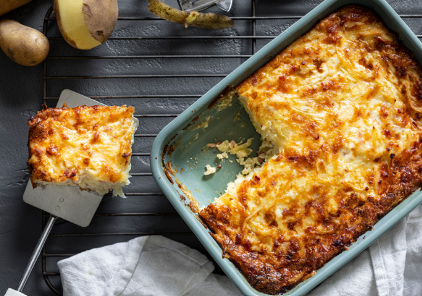

Kartoffelauflauf auf Schweizer Art
- 500 g Kartoffel(n)
- 250 g Emmentaler, geriebener
- 200 ml Schlagsahne
- 100 g Schinken, fein gewürfelt
- Ei(er)
- Salz und Pfeffer
- Muskat
Zubereitung
- Die rohen Kartoffeln grob in eine Schüssel reiben.
- Überschüssige Flüssigkeit abgießen. Die Eier mit der Sahne und den Gewürzen verquirlen.
- Mit den Kartoffeln, dem Käse und dem Schinken mischen und alles in eine Auflaufform geben.
- Bei 200 °C Ober-/Unterhitze 1 Stunde backen.

Gelingt in kurzer Zeit, schmeckt wahnsinnig lecker.